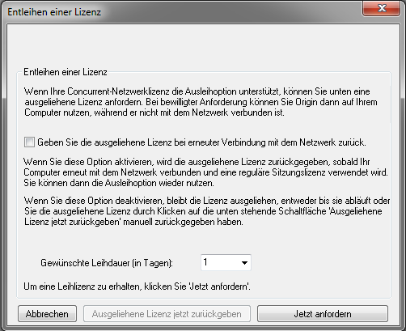

Origin ausführen, wenn es vom Netzwerk getrennt ist
Concurrent-Borrow-LIC
Ihre FLEXnet-Concurrent-Netzwerkverwaltung unterstützt das Ausleihen. Dies bedeutet, dass Origin-Computer vom FLEXnet-Server getrennt werden können und Origin anschliessend noch für einen gewissen Zeitraum weiter ausgeführt werden kann. Standardmäßig beträgt die maximal zugelassene Ausleihzeit eine Woche. Dieser maximale Zeitraum ist in der Lizenzdatei des FLEXnet-Servers kodiert, die Sie von der Webseite von OriginLab abrufen. Wenn Sie eine kürzere oder längere maximale Ausleihzeit benötigen (bis zu einem Jahr), wenden Sie sich bitte an OriginLab: RegInfo@OriginLab.com.
Eine Lizenz für den Computer des Benutzers ausleihen[bearbeiten]
- Öffnen Sie Origin. Wählen Sie Hilfe: Über Origin.
- Klicken Sie auf die Schaltfläche Lizenz.
- Klicken Sie auf die Schaltfläche Ausleihen.
- Wählen Sie aus der Auswahlliste die Anzahl der Tage, die Sie die Lizenz ausleihen möchten.
- 
- HINWEIS: Die maximale Anzahl der Tage in der Auswahlliste ist ein Tag weniger als die maximale Anzahl, die in der Lizenzdatei angegeben ist. Die gezeigte Anzahl kann manuell überschrieben werden, solange die Anzahl, die Sie anfragen möchten, kleiner als die maximal möglich Anzahl der Tage ist. Um zum Beispiel einen Ausleihzeitraum von 100 Tagen anzufragen, geben Sie 100 in dem Kombinationsfeld Anzahl der Ausleihtage (Number of day to borrow) ein.
- Klicken Sie auf Jetzt anfragen (Request Now).
- Sie sollten nun eine Meldung angezeigt bekommen, die aussagt, dass Ihre Lizenz erfolgreich ausgebucht wurde.
- Trennen Sie den Computer des Benutzers von dem Netzwerk VOR einem Neustart von Origin, wenn das Kontrollkästchen Ausgeliehene Lizenz bei erneuter Verbindung mit Netzwerk zurückgeben (Return borrowed license when reconnect to network) aktiviert ist.
HINWEIS: Wenn Sie Origin neu starten, während die Verbindung zum Netzwerk noch besteht, wird Ihre Lizenz automatisch zurückgebucht, es sei denn, Sie haben das Kontrollkästchen Ausgeliehene Lizenz bei erneuter Verbindung mit Netzwerk zurückgeben deaktiviert, um die Lizenz auszuleihen.
Ein Hinweis zu Roaming User Profiles:[bearbeiten]
Roaming Profiles werden nicht von der FLEXnet-Lizenzausleihfunktion unterstützt. Die Ausleihfunktion kann jedoch dazu gebracht werden mit Roaming Profiles zusammenzuarbeiten, wenn Sie die folgende Vorgehensweise verwenden:
Um eine Lizenz auszuleihen:
- Melden Sie sich an dem Computer an, der Ihr Roaming Profile verwendet (Computer ist mit dem Netzwerk verbunden).
- Starten Sie Ihr Origin und leihen Sie eine Lizenz aus.
- Schließen Sie Origin.
- Trennen Sie die Verbindung zum Netzwerk und fahren Sie den Computer dann herunter. (Durch das Trennen vor dem Herunterfahren behalten Sie das Profil lokal, anstatt es auf dem Roaming-Profile-Server zu speichern.)
Um eine ausgeliehene Lizenz zurückzugeben:
- Starten Sie den Computer und melden Sie sich mit Ihrem Roaming Profile an (OHNE Verbindung mit dem Netzwerk).
- Stellen Sie wieder eine Verbindung zwischen Computer und Netzwerk her.
- Starten Sie Ihr Origin. Es gibt automatisch die ausgeliehene Lizenz zurück.